01
Общество и городская среда · событие дня
В среду уже ждет домашний матч FONBET Кубка России против "Мурома".
Тем временем, глава города Сандрюков проводит так называемый контроль в домах где нет проблем, не обращая внимания на проблемы, которые существуют в других районах.…
Обновлённые скамейки уже стоят на бульварах Новый Венец, Гончарова и Пластова.…
Глава города Александр Болдакин заслушал доклад о промежуточных итогах деятельности органов управления и функционирования сил гражданской обороны на территории муниципалитета, а также определил приоритетные задачи на следующий год.…

После вмешательства депутатов «Ульяновскводоканал» устранил засоры на своих сетях, а УК «Олимп» почистила внутридомовую канализацию.…


Компромат Ульяновск ⚠️ Первого замглавы Инзенского района Светлану Вишнякову осудили по ст. 315 УК РФ за саботаж требований налоговиков.…
Он советует бизнесу искать новые независимые площадки.
Во Владивостоке более богатую версию с круиз-контролем и камерой заднего вида предлагают за ₽2,2 миллиона, а в регионах цены доходят до ₽2,92 миллиона в Санкт-Петербурге.…
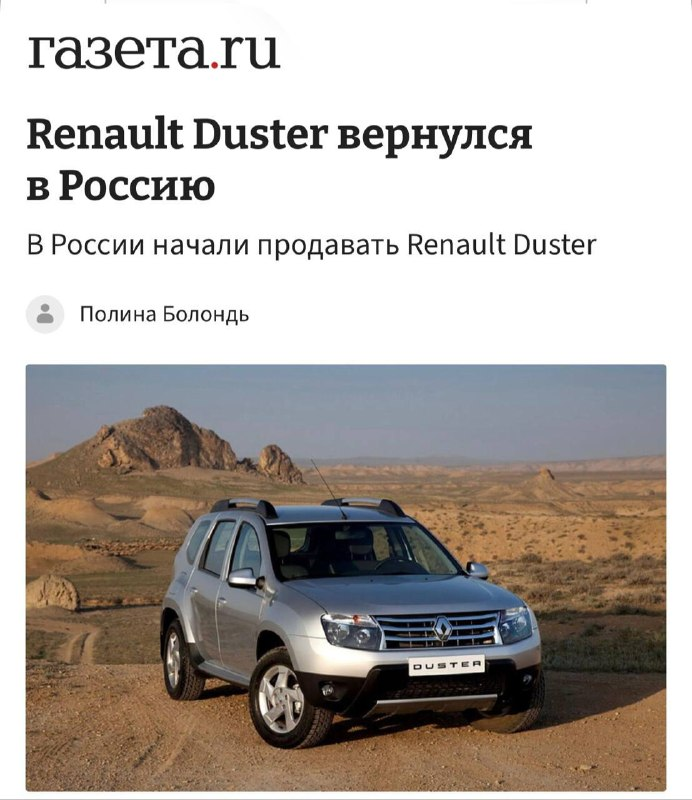
Дата, время и место прощания с ветераном — по ссылке .…

Среди сервисов, на которые жаловались пользователи: «Магнит», Fix Price, War Thunder, «Дом.ру», Rostic’s, Flowwow, ЦИАН, DDX Fitness, «М.Видео», Lamoda, «Вкусно — и точка», «Дринкит» и «Додо Пицца».…


В дежурную часть МО МВД России «Чердаклинский» обратился 59-летний местный житель с заявлением о совершении мошеннических действий.…

Уважаемые труженики села, работники и ветераны агропромышленного комплекса Новомалыклинского района!…
Фотограф - Судакова Валентина Юрьевна Источник: Фонд…

Хочу от всей души поблагодарить врачей и медицинский персонал Центральной клинической медико-санитарной части (Медсанчасть) на улице Лихачёва. 9 сентября 2026 года мою маму привезли туда в крайне тяжёлом состоянии.…
С 12 по 18 октября в Ульяновской области пройдёт тематическая неделя борьбы против рака молочной железы, организованная региональным Минздравом и Центром общественного здоровья совместно с Онкологическим диспансером и другими медицинскими организациями в рамках нацпроекта «Продолжительная и активная жизнь».…

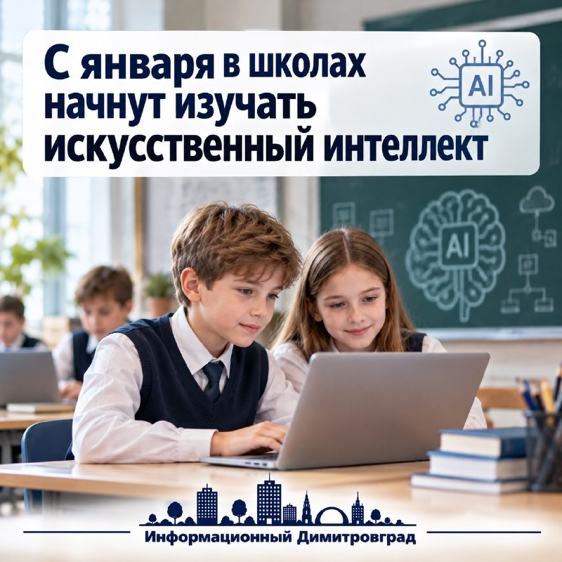
Курс станет обязательным и войдёт в расписание по аналогии с «Разговорами о важном». Школьникам расскажут, как работает ИИ, где он применяется — в науке, медицине, экологии, образовании и промышленности.…
Также обновят программу по предмету «Основы безопасности и защиты Родины».…
12 октября специализированное конструкторское бюро «Контур» и организация «Цифровая экономика» представят новый обучающий ролик и методические материалы для педагогов на тему ответственного использования искусственного интеллекта.…

Для подготовки населения в городе действуют четыре учебно-консультационных пункта при районных администрациях и один виртуальный на сайте мэрии.…

Сначала в школах будет идти федеральный эфир. Оператором проекта выступает АНО «Школьное телевидение».…

Карамзин считал, что «без хороших отцов нет хорошего воспитания, несмотря на все школы, институты и пансионы».…


К эфиру могут подключиться более полутора тысяч школ — у них уже есть нужная инфраструктура.…


Пользователи жалуются на перебои в работе магазина для покупки цветов Flowwow, Яндекс Такси, Яндекс Музыки, «Додо Пиццы», «Кинопоиска» и ряда других сервисов.…

В программе — Концерт В.А.Моцарта для кларнета с оркестром. А следом — традиционные шотландские и французские мелодии.…

Ундоровский музей — единственный в России и один из шести в мире, посвящённых фауне морей мезозойской эры.…

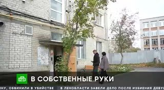
После смерти Бондиной на жильё претендовала её дочь, однако семьи отстояли право на жильё. Сейчас они делают ремонт и планируют переехать к Новому году.
В поисках задействованы сотрудники СК, МВД, МЧС, спасатели, водолазы, волонтёры «ЛизаАлерт», а также спецтехника: дроны, гидролокаторы, эхолоты, глубоководные аппараты и суда на воздушной подушке.…
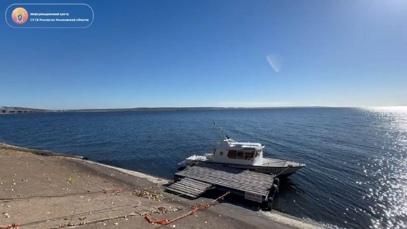
Чтобы поддерживать легенду, мужчине отправляли медицинские заключения, снимки УЗИ и фотографии младенцев.…
В общей сложности ограничения действовали 9,2% времени, а их средняя продолжительность составила 4 часа 28 минут.…
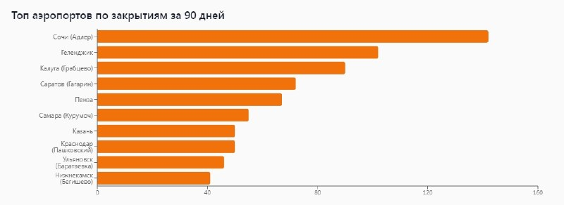
Госпитализированы сам водитель и четверо пассажиров (22, 15 и 14 лет).…

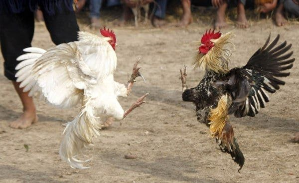

🏠 В 2023 году большая семья Владимира по договору найма заехала в новую квартиру. Жилищную программу для тружеников села реализуем благодаря поддержке Минсельхоза России.…
Итоги проведения мероприятий обсудили на заседании штаба по комплексному развитию региона под председательством губернатора Алексея Русских 5 октября.…

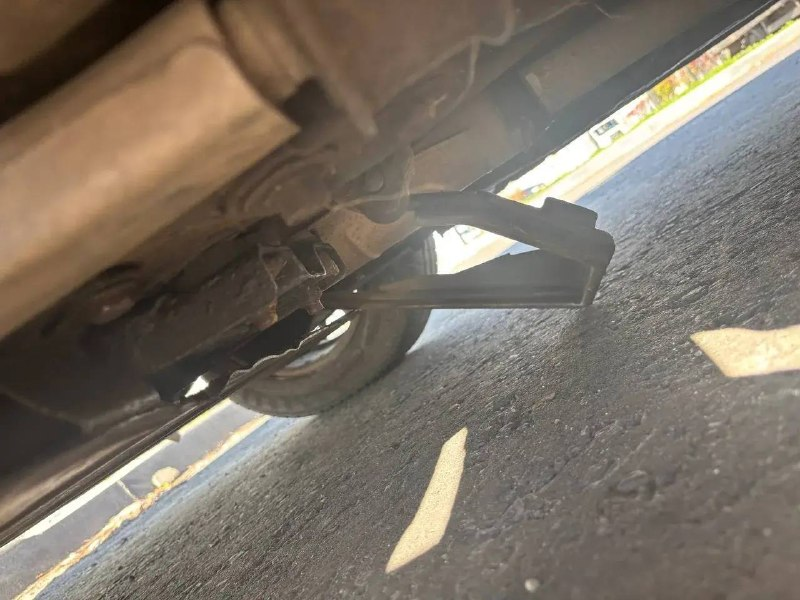
Администрация города и глава Ульяновска Александр Болдакин выразили искренние соболезнования родным и близким ветерана.…
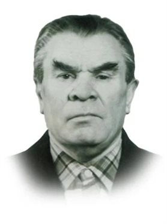
Смартфоны за 140 тысяч рублей становятся красными, массово жалуются пользователи.
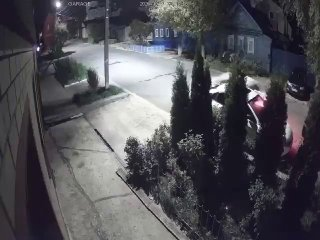
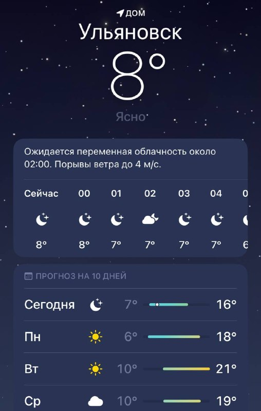
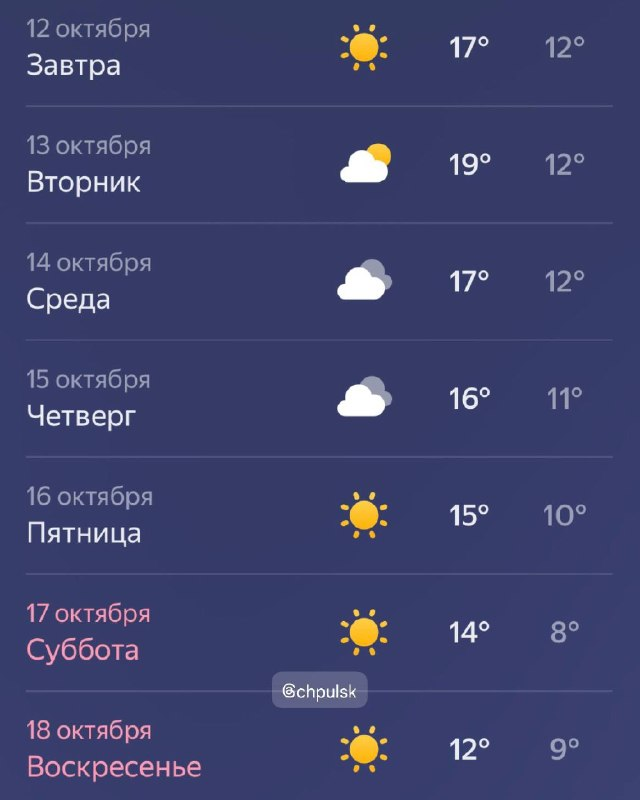
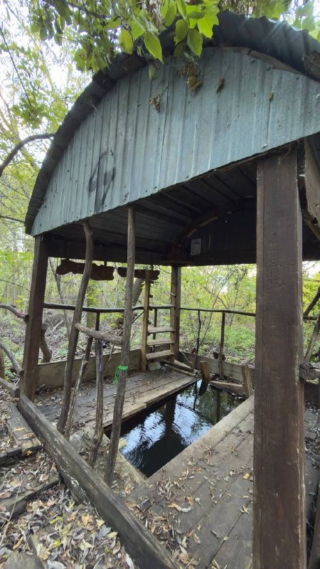
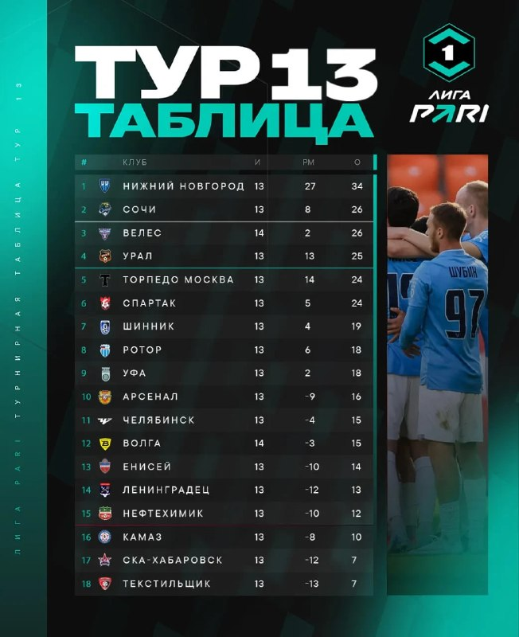
В 2026 году он отметил первый юбилей — 10 лет. В этом году на старт вышли около 10 000 бегунов.…
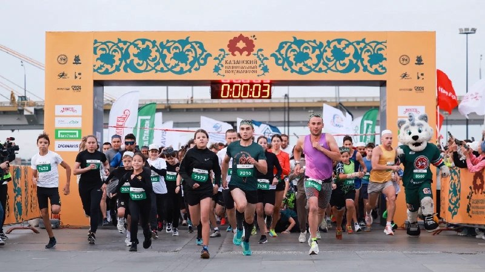
Отличная возможность показать силу духа, отточенную технику и волю к победе.…

В среду уже ждет домашний матч FONBET Кубка России против "Мурома".
Общий ущерб составил 4,9 миллиона рублей.…


Губернатор Ульяновской области Алексей Русских принял участие в торжественной церемонии подведения итогов состязания.…


| Тема | Завтра | Ожидание | Уверенность |
|---|---|---|---|
| БПЛА и воздушные угрозы | ↓ спад | ~13.6 упоминаний | средняя |
| Школы и вузы | ↓ спад | ~15.4 упоминаний | средняя |
| Медицина | ↓ спад | ~3.5 упоминаний | средняя |
| ЖКХ, газ, тепло | ↓ спад | ~7.7 упоминаний | средняя |
| Суды и криминал | ↓ спад | ~31.8 упоминаний | средняя |
| Спорт | ↓ спад | ~17.3 упоминаний | средняя |